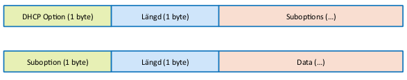

Option82-format
Option82-formatet är enligt RFC-3046.

Hur suboptions kodas, och vilka som används, är inte standardiserat. För Cisco ser det ut såhär:

I APIt representeras Option82 som en hex-sträng av det binära värdet.
Exempel:
Givet remoteId, circuitId
remoteId: "10.10.10.10"
circuitId: "eth 0/1"
Vi använder ascii-tabellen för att få strängen i binär form:
remoteId: "31302E31302E31302E3130" (11 bytes)
circuitId: "65746820302F31" (7 byte)
Detta ger i sin tur Option82-värdet
"5216010765746820302F31020B31302E31302E31302E3130"
Där:
52 indikerar Option82
16 indikerar efterföljande antal bytes (22 bytes)
01 indikerar start suboption 1
07 indikerar längd suboption 1
suboption 1 data (65746820302F31, circuitId)
02 indikerar start suboption 2
0B indikerar längd suboption 2 (hex för 11)
suboption 2 data (31302E31302E31302E3130, remoteId)